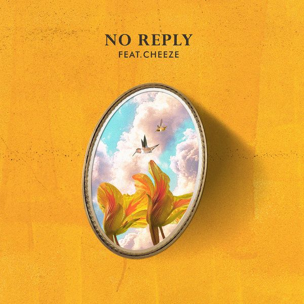

안녕하세요 라보엠입니다.
여러분들은 봄이 오는 걸 어떻게 알아채시나요? 저는 코가 붓고 비염이 심하지기 시작하면 아 봄이 오는 구나 느낍니다. 아직 겨울의 기운이 남아 있지만 추웠던 겨울이 빨리 가고 봄이 빨리 오길 기대하며 노리플라이의 봄 노래들을 소개해드리겠습니다 .

노리플라이(no reply) - 나의 봄(Feat. CHEEZE)
이 노래는 사랑에 빠진 이의 모습을 노리플라이의 언어와 경쾌한 음악으로 잘 표현했습니다.
나의 봄은 온통 그대라오
정말 로맨틱한 고백이네요. 치즈의 보컬인 달총님과 함께 불러 설레임을 더했습니다.
노리플라이 나의 봄 가사
흩날리는 꽃잎은 쌓여가고
사람들은 그 위를 스쳐가네
아쉬운 계절 가벼워진 옷차림 탓을 해도
왜 난 더 허전한 건지
쉼 없이 불어오는 바람
펼쳐진 하늘과 설레는 향기도
그대 없이 난 아무 의미 없는 걸
나의 봄은 온통 그대라오
잠 못 이룬 밤
그 밤공기를
같이 걷고 싶은데
그댄 내 맘을 아는지
쉼 없이 불어오는 바람
펼쳐진 하늘과 설레는 향기도
그대 없이 난 아무 의미 없는 걸
나의 봄은 온통 그대라오
거리에 사람들 웃음 가득하고
나른한 햇살 빛이 넘쳐도
그대 없이 난 아무 의미 없는 걸
나의 봄은 온통 그대 걸음 따라
나의 봄은 온통 그대라오
노리플라이 - Don't you know (feat. 한효주)
2010년 GMF(Grand Mint Festival) 의 주제곡인 이 노래는 2010년 GMF 레이디 한효주님과 함께 불렀습니다. 연애를 시작하는 연인의 설레임을 잘 담아낸 것 같습니다.
12년만에 이승기님이 한효주님과 함께 부르기도 했었네요.
조소정 - Sunshine (권순관) of no reply (노리플라이)
좋아하는 상대를 Sunshine 으로 표현한 아름다운 곡입니다.
Yes you're my shining 멀리 봄이 오고 있네요
네 정말 봄은 오고 있습니다. 에치ㅡ
이 외에도 노리플라이에게는 "조금씩 천천히 너에게", "눈부셔" 등 봄에 어울리는 곡이 참 많네요.
노리플라이 (No Reply) - 조금씩 천천히 너에게
조금씩 천천히 너에게 가사
1.
몇 번을 펼쳐보았지 내 일기장 속에
수많은 너의 얘기들
참 사소한 작은 몸짓 하나에 의미를 둬
이상한 일야 이렇게 된 내가
한참을 바라보았지 옆자리에 앉은 너를
머뭇거린 첫인사에
하얀 손을 내밀어 주며 밝게 웃던 니 모습이
커다란 의미로 다가오네
아직은 너를 알 수는 없지만
너와 난 서로 많이 다르지만
시간이 점점 흘러간 그만큼
조금씩 이끌려 너에게
2.
신기해 너라는 이름
아직 낯선 니가 마음 속 한켠에 남아
어색한 니 장난스러움이 난 왜 이리 재밌는지
널 보면 웃게 돼 이상하게
아직은 너를 알 수는 없지만
(아직은 너를 알 순 없지만)
너와 난 서로 많이 다르지만
(너와 난 서로 다르겠지만)
시간이 점점 흘러간 그만큼
조금씩 천천히 너에게
가끔은 길게 한숨을 쉬고
(아픔이 아물지 않은 표정)
지친 널 감싸 안을 내가 되었으면
아직은 너를 알 수는 없지만
너와 난 서로 많이 다르지만
(너와 난 서로 다르겠지만)
시간이 나를 스쳐간 그만큼
조금씩 천천히 너에게
(어느 날 문득 너에게 난)
한없이 이끌려 너에게
노리플라이 (No Reply) - 눈부셔
노리플라이 눈부셔 가사
int.
눈부셔
너의 마음은 나를 향해 빛나고
오후 햇살 가득한 너를 담은 풍경이
1.
눈부셔
이른 봄날을 너와 함께 걷는 게
네가 웃음 지을 때 모든 세상이 눈부셔
어떤 아름다운 멋진 풍경도
네가 없인 아무런 의미 없을 것 같아
파도 치는 마음과 부드러운 바람
곁에는 기분 좋은 그대
이토록 아름다운 세상을
여태껏 몰랐죠
허전했던 하늘이 다르게 느껴져
이토록 눈부시게
그대 안에 빛나는 이 계절이
나의 품 안에
2.
놀라워
나의 우주는 너를 만난 후에야
새롭게 시작이 돼 어둠 속을 헤매던 나에게
파도 치는 마음과 부드러운 바람
곁에는 기분 좋은 그대
이토록 아름다운 세상을
여태껏 몰랐죠
허전했던 하늘이 다르게 느껴져
이토록 눈부시게
어떤 계절 어떤 시간 속에도
빛나는 그대
br.
가까이 걸어요
내가 그대 아님
다시 어두워질까 그래요
멀어질수록
나는 빛을 잃어가요
우두커니 생각해
꽃이 지고 피는 사소한
짧은 시간만큼
서로의 시간도 천천히
물들어 가는 게
지금 우린 어쩌면
잊지 못할 순간 노래는 끝나가도
그대 안에 빛나는 이 계절이
나의 품 안에
풀은 마르고 꽃은 시들어도
그대 마음은 영원하길
해가 저물면
불빛은 훨씬 아름답죠